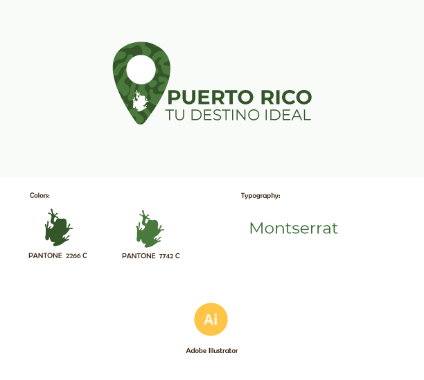

My Portfolio
Puerto Rico
This project was created for a tourism brand seeking to showcase
the beauty and attractions of this enchanting island.

The logo incorporates the beloved coqui, Puerto Rico's iconic tree frog,
positioned within a pin location. This clever design choice signifies Puerto Rico's
unique and sought-after destinations (Visual Semiotic - 2022)